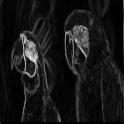
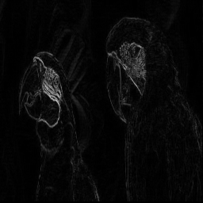
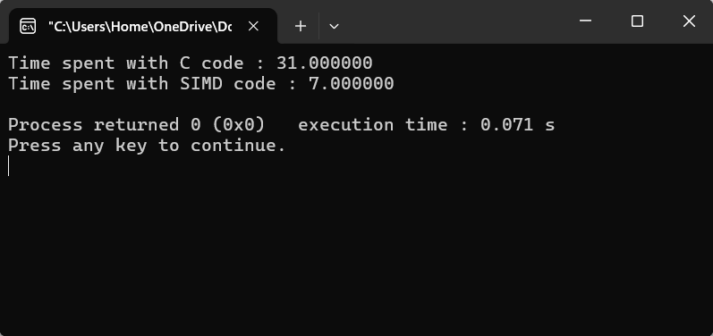

Here is a source image containing parrots.

We can perform edge detection using some standard C code.

Or we can use Intel assembly code to perform single instruction, multiple data (SIMD).

The resulting images are similar but the number of clock cycles is very different!